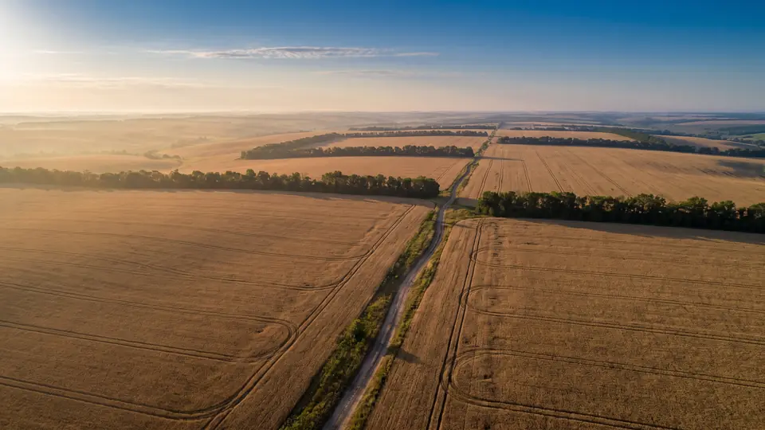

5.4
4.9
5.8
6.1
6.4
20212022202320242025
Yields that keep rising
Five years running we have lifted wheat yields through crop rotation and precision application. 2022 was a drought year, and we show that one too.

Full-cycle agribusiness in Vinnytsia region: from crop rotation and crop monitoring to our own grain elevator, drying and dispatch. Working with traders, flour mills and processors since 2008.
7 crops in rotation · 46,000 t of storage · exports to 14 countries
Who we work with
We are not middlemen. The land, the machinery, the dryers and the elevator are ours. So one company answers for the quality of a consignment, not a chain of five suppliers.
CENTRAGRO PLUS LLC farms 14,200 hectares in Vinnytsia region. The black soils of Podillia, a seven-field crop rotation and our own machinery fleet deliver stable yields even in dry years.
Every consignment goes through our laboratory before dispatch: protein, moisture, test weight, falling number, foreign matter. The figures are added to the documents — the partner sees the grain before it has left the yard.

Volumes for the 2025/26 season. Hover over a crop to see its consignment specifications.
Four things we keep in-house instead of handing to contractors.
Five years running we have lifted wheat yields through crop rotation and precision application. 2022 was a drought year, and we show that one too.
Our own grain elevator and three drying complexes. We do not depend on queues at third-party elevators at peak harvest.
A fleet of 24 grain trucks, a rail siding and proven routes to the ports. Dispatch in daily consignments.
Every consignment gets its own certificate before dispatch. The figures travel with the grain instead of being argued out on the buyer's weighbridge.
One person accountable at every stage. The partner receives a report at each step.

Soil analyses for every field, hybrids selected for the specific block, an input application plan for the season.

No-till and strip-till, GPS guidance accurate to 2.5 cm, variable-rate seeding.

Drones with NDVI cameras every two weeks, weekly scouting by an agronomist, maps of problem zones.

Our own combines go into the field on moisture, not on a schedule. Dryers rated at 1,200 t/day are right next door.

A 46,000 t grain elevator, separate storage by class, dispatch by road and rail throughout the year.
A compact land bank means a short haul from field to dryer. The grain has no time to spoil on the way.


The furthest field is 38 km from the elevator. The average haul from field to dryer is 14 km.
We work under contract, VAT registered, with a full set of documents. Minimum consignment from 100 tonnes.
Purchase against stock already at the elevator. Suits you when the volume was needed yesterday.
from 100tonnes
Price and volume fixed before harvest. The most predictable option for a processor.
from 500tonnes
Seasonal volumes matched to your production needs, with agreed logistics.
from 2,000tonnes
Companies that buy grain from us every season.

We have been taking their wheat for four seasons. The main thing is that the declared protein and the actual protein match. In four years, not one recalculation on the weighbridge.

A forward contract with them covers a third of the mill's annual requirement. The price is fixed in March — and in October it is exactly what we agreed.

The maize arrives dry, at 13.5–14%. For feed production that is critical: it does not heat up in the silo and does not drag losses along with it.


Send us the crop, the volume and the quality parameters you need — we will reply with a price and a dispatch schedule within one working day.
Request a quoteWe reply within one working day. If the matter is urgent, call us.